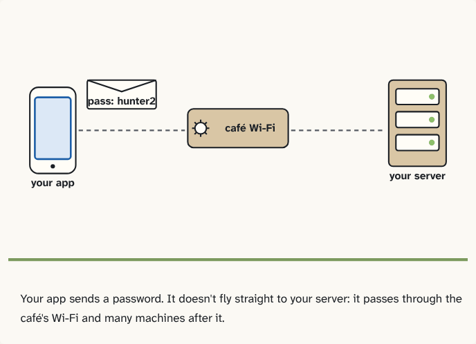

Free courses · 6 puzzles so far · about 30 minutes
Encryption, from the ground up
What actually happens in the S of HTTPS. From "anyone on the café Wi-Fi can read your packets" to keys, key exchange, hashes, signatures and certificates, one small block at a time, until TLS stops being magic.

How it works
Each puzzle starts with an attack the next block has to stop, gives you that one block, shows it in a diagram that plays itself, and ends with three questions you have to answer to unlock the next one. Facts come from the standards themselves (RFC 8446 for TLS 1.3, NIST's AES and SHA standards), quoted on every page. How these courses are made, and how they're checked →
Modules
Every puzzle opens: start wherever you like. Each one builds on the ones before it; its check tells you you're ready for the next. ✓ marks the ones you've passed (saved only in this browser).
Module 1: The blocks of HTTPS
Six blocks, each stopping one attack, that together make TLS. Know this already? Take the check →
- Start here: Anyone on the line Your app sends a password to a server. Between the two sit a café's Wi-Fi, a phone operator and a dozen machines you don't control. Here's what any of them can do, and the first defence that stops it.
- One key for both In puzzle 0, encryption turned the password into gibberish. Here's how the standard way does it, why it's fast, and the one problem it leaves open. Builds on 0.
- A secret agreed in public In puzzle 1, AES needed the same key on both sides, and sending it would hand it to the listener. Here's how two sides agree on a secret while every word they say is overheard. Builds on 1.
- A fingerprint for data In puzzle 0, a machine in the middle could change data on its way, and encryption alone wouldn't notice. Here's the block that makes any change visible. Builds on 0.
- Proof of who you are In puzzle 2, the key exchange worked with whoever answered, and in puzzle 3 an attacker could swap a digest. Both gaps close the same way: a stamp only the real server can make. Builds on 2, 3.
- "TLS: the blocks together" Puzzles 0 to 4 each stopped one thing a machine in the middle could do. The S in HTTPS is those blocks put together in one short conversation before your first request. Builds on 4.
Module 2: Secrets on the phone (next)
Where an app keeps keys and tokens: the Android Keystore and hardware-backed keys, encrypted storage, certificate pinning and when it backfires.
Module 3: Accounts and tokens (later)
Passwords and why servers hash them, OAuth and access tokens, refresh tokens, and what to do when a token leaks.